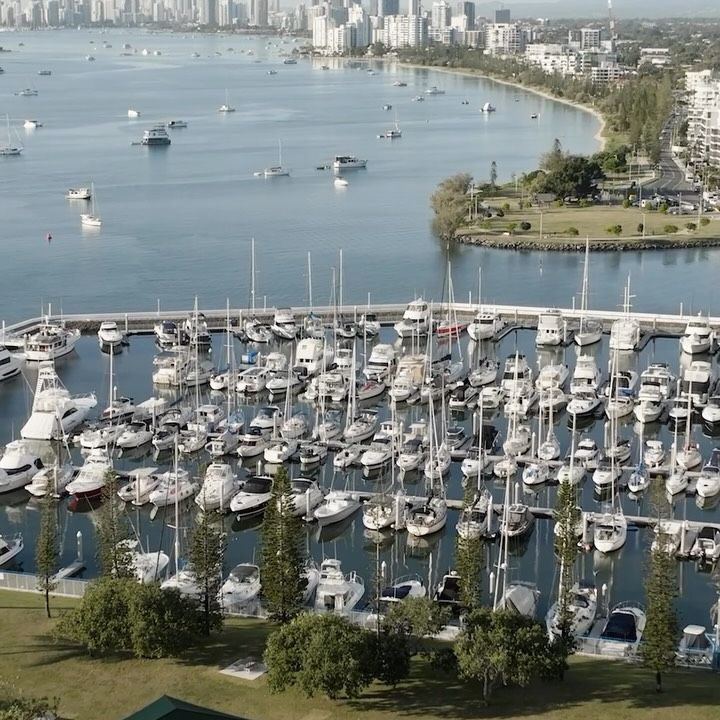
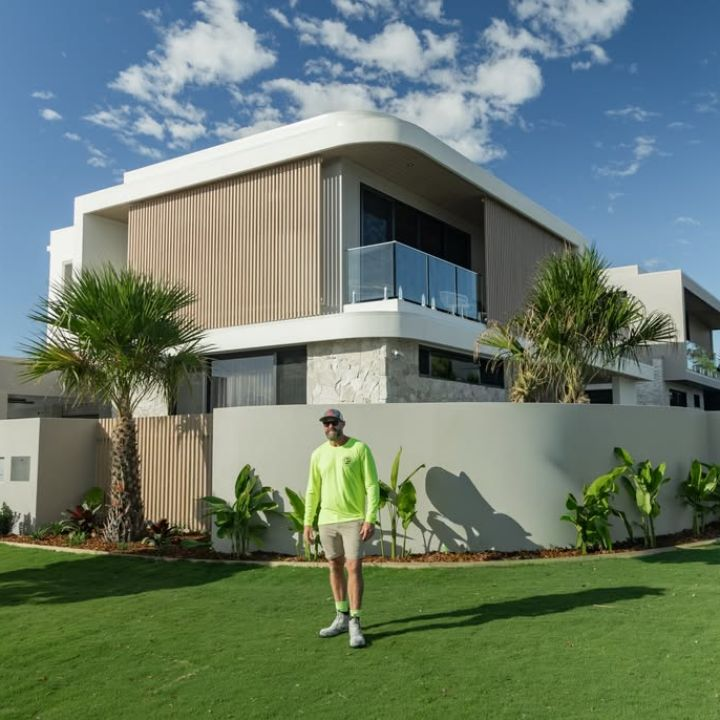
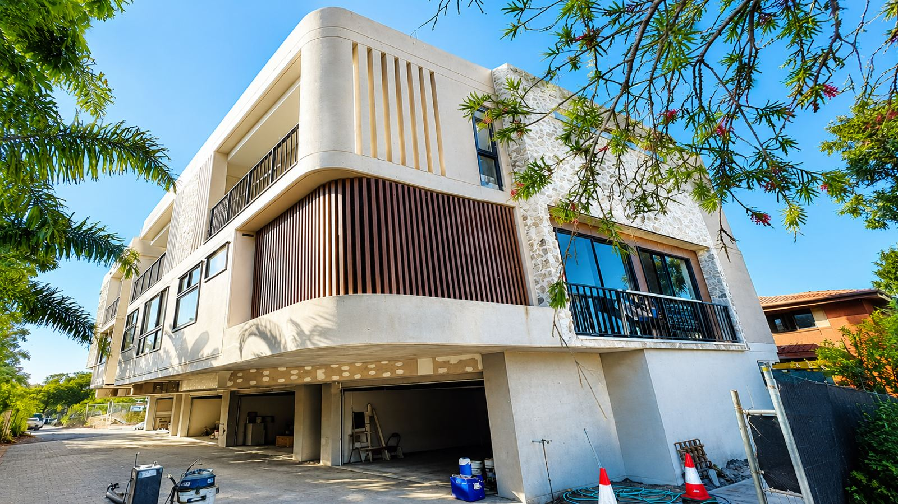
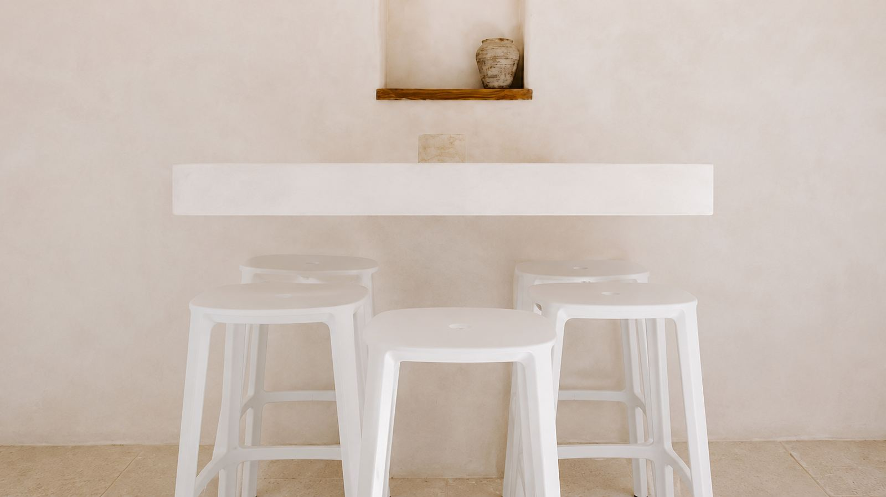

Solid plastering and rendering contractor, Gold Coast
Coastside is based on the Gold Coast. Most of our work is here: architect-designed homes, canal-front rebuilds, townhouse and apartment developments and commercial fitouts.

What shapes a render job on the Gold Coast
General conditions for the area. Coastside's approach to each to confirm in Steve interview.
Salt air near the beach and canals
Beachfront and canal-front buildings take salt spray and wind-driven rain. System choice, detailing at sills and parapets, and the coating over the render matter more here than inland.
Heat, humidity and summer storms
Render cures faster in heat and wind, and storms stop work at short notice. Programs through summer need weather allowances and protection for fresh work.
Canal-front access
Many canal homes have tight side access and limited street frontage, which affects scaffold, pump placement and material handling.
Mid and high-rise facades
Beachfront residential towers and mid-rise apartments need staged work at height, hoist access and a crew sized to the scaffold program.
Knock-down rebuilds and renovations
Established suburbs mix new builds with renovations, where new render has to meet or match existing walls.
Work nearby

Brakes Crescent, Miami
A clean, modern coastal build in Miami on the southern Gold Coast.
View case study
Coastal residence
White rendered facade with battens and a stone base.
View case study
Canal-front residence
External render from scaffold on a canal-front home.
View case study
Multi-storey residential
Curved rendered balconies on a multi-storey residential building.
View case study
Commercial entry
Curved rendered entry wall and bench.
View case study
Hospitality feature wall
Textured plaster feature wall with a built-in bench.
View case studyWhat we do here
External rendering
Cement and acrylic render systems for facades, elevations and boundary walls.
View service02Commercial rendering
Crew numbers, machine-applied render and program control for multi-residential and commercial facades.
View service03Solid plastering
Solid plaster to masonry walls for premium homes, apartments and commercial interiors.
View service04Architectural coatings
Specified coating and texture systems for facades, feature walls and design-led projects.
View service05Venetian plaster
Hand-applied Venetian plaster with natural stone and marble textures.
View serviceBuilders, developers, architects
Custom-home and commercial builders, developers, architects and designers. Named with permission on each case study.
Suburbssuburbs worked in, from the project list
Council and licensingCity of Gold Coast. Work in Queensland is licensed through the QBCC.
Gold Coast FAQs
Are you licensed in Queensland?
Do you work north of the Gold Coast?
Can you work on canal-front homes with restricted access?
Building on the Gold Coast?
Send the plans with the site address and access. We come back with an itemised price.